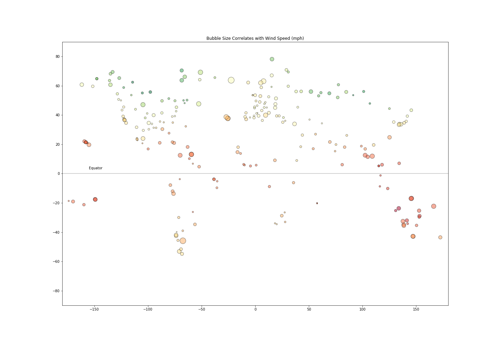
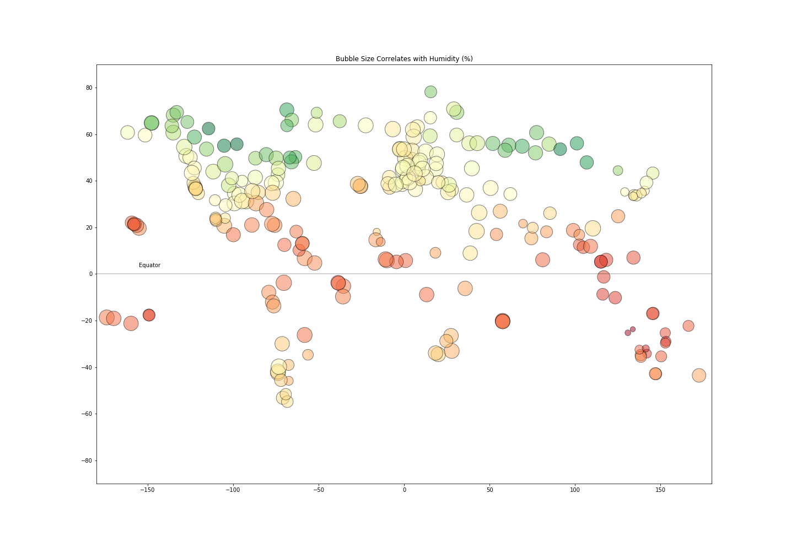

Each slide below includes latitude, longitude, temperature and one of the following: humidity, wind speed or cloudiness. Bubble size indicates the power of the variable, and the color of each bubble indicates temperature. The y axis is latitude and x is longitude.
The inclusion of longitude provides a powerful tranformation in this data visualization and a world weather map appears. Among other things, this highlights the power of knowing which data points to include. If reliance was strictly on latitude and data available from openweathermap.org which relies exclusively on latitude and longitude and provides no city or country information, the visualization would have included the oceans that cover much of the earth's surface. Correlating longitude with the data that had already been merged with the CityPy library allowed the data to be sorted for inhabited areas and it gives the visualization contextual meaning.
Each slide reflects a different datapoint and works effectively as a multiplier of the temperature data. Wind seems to be the weakest variable having the least effect on bubble size, humidity the strongest on the whole and cloudiness, judging from the extremes in bubble size may hae the greatest range in variation. In keeping with the point made above, including the additional variables help to give context to the individual visualizations found on the respective and comparison page on this site. On their own, they are on helpful, but seen through the illustrations above, it is easier comprehend what impact humidity, windspeed and cloudiness actually has on worldwide weather patterns.